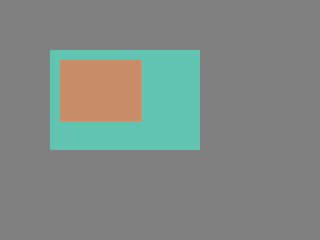
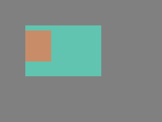

.. include:: /header.rst
:github_url: |github_link_base|/overview/object.md
Objects
In LVGL the basic building blocks of a user interface are the objects, also called Widgets. For example a Button, Label, Image, List, Chart or Text area.
You can see all the Object types here.
All objects are referenced using an lv_obj_t pointer as a handle. This pointer can later be used to set or get the attributes of the object.
Attributes
Basic attributes
All object types share some basic attributes:
Position
Size
Parent
Styles
Event handlers
Etc
You can set/get these attributes with lv_obj_set_... and lv_obj_get_... functions. For example:
/*Set basic object attributes*/
lv_obj_set_size(btn1, 100, 50); /*Set a button's size*/
lv_obj_set_pos(btn1, 20,30); /*Set a button's position*/
To see all the available functions visit the Base object's documentation.
Specific attributes
The object types have special attributes too. For example, a slider has
Minimum and maximum values
Current value
For these special attributes, every object type may have unique API functions. For example for a slider:
/*Set slider specific attributes*/
lv_slider_set_range(slider1, 0, 100); /*Set the min. and max. values*/
lv_slider_set_value(slider1, 40, LV_ANIM_ON); /*Set the current value (position)*/
The API of the widgets is described in their Documentation but you can also check the respective header files (e.g. widgets/lv_slider.h)
Working mechanisms
Parent-child structure
A parent object can be considered as the container of its children. Every object has exactly one parent object (except screens), but a parent can have any number of children. There is no limitation for the type of the parent but there are objects which are typically a parent (e.g. button) or a child (e.g. label).
Moving together
If the position of a parent changes, the children will move along with it. Therefore, all positions are relative to the parent.
lv_obj_t * parent = lv_obj_create(lv_scr_act()); /*Create a parent object on the current screen*/
lv_obj_set_size(parent, 100, 80); /*Set the size of the parent*/
lv_obj_t * obj1 = lv_obj_create(parent); /*Create an object on the previously created parent object*/
lv_obj_set_pos(obj1, 10, 10); /*Set the position of the new object*/
Modify the position of the parent:

lv_obj_set_pos(parent, 50, 50); /*Move the parent. The child will move with it.*/
(For simplicity the adjusting of colors of the objects is not shown in the example.)
Visibility only on the parent
If a child is partially or fully outside of its parent then the parts outside will not be visible.

lv_obj_set_x(obj1, -30); /*Move the child a little bit off the parent*/
This behavior can be overwritten with lv_obj_add_flag(obj, LV_OBJ_FLAG_OVERFLOW_VISIBLE); which allow the children to be drawn out of the parent.
Create and delete objects
In LVGL, objects can be created and deleted dynamically at run time. It means only the currently created (existing) objects consume RAM.
This allows for the creation of a screen just when a button is clicked to open it, and for deletion of screens when a new screen is loaded.
UIs can be created based on the current environment of the device. For example one can create meters, charts, bars and sliders based on the currently attached sensors.
Every widget has its own create function with a prototype like this:
lv_obj_t * lv_<widget>_create(lv_obj_t * parent, <other parameters if any>);
Typically, the create functions only have a parent parameter telling them on which object to create the new widget.
The return value is a pointer to the created object with lv_obj_t * type.
There is a common delete function for all object types. It deletes the object and all of its children.
void lv_obj_del(lv_obj_t * obj);
lv_obj_del will delete the object immediately.
If for any reason you can't delete the object immediately you can use lv_obj_del_async(obj) which will perform the deletion on the next call of lv_timer_handler().
This is useful e.g. if you want to delete the parent of an object in the child's LV_EVENT_DELETE handler.
You can remove all the children of an object (but not the object itself) using lv_obj_clean(obj).
You can use lv_obj_del_delayed(obj, 1000) to delete an object after some time. The delay is expressed in milliseconds.
Screens
Create screens
The screens are special objects which have no parent object. So they can be created like:
lv_obj_t * scr1 = lv_obj_create(NULL);
Screens can be created with any object type. For example, a Base object or an image to make a wallpaper.
Get the active screen
There is always an active screen on each display. By default, the library creates and loads a "Base object" as a screen for each display.
To get the currently active screen use the lv_scr_act() function.
Load screens
To load a new screen, use lv_scr_load(scr1).
Layers
There are two automatically generated layers:
top layer
system layer
They are independent of the screens and they will be shown on every screen. The top layer is above every object on the screen and the system layer is above the top layer.
You can add any pop-up windows to the top layer freely. But, the system layer is restricted to system-level things (e.g. mouse cursor will be placed there with lv_indev_set_cursor()).
The lv_layer_top() and lv_layer_sys() functions return pointers to the top and system layers respectively.
Read the Layer overview section to learn more about layers.
Load screen with animation
A new screen can be loaded with animation by using lv_scr_load_anim(scr, transition_type, time, delay, auto_del). The following transition types exist:
LV_SCR_LOAD_ANIM_NONESwitch immediately afterdelaymillisecondsLV_SCR_LOAD_ANIM_OVER_LEFT/RIGHT/TOP/BOTTOMMove the new screen over the current towards the given directionLV_SCR_LOAD_ANIM_MOVE_LEFT/RIGHT/TOP/BOTTOMMove both the current and new screens towards the given directionLV_SCR_LOAD_ANIM_FADE_ONFade the new screen over the old screen
Setting auto_del to true will automatically delete the old screen when the animation is finished.
The new screen will become active (returned by lv_scr_act()) when the animation starts after delay time.
Handling multiple displays
Screens are created on the currently selected default display.
The default display is the last registered display with lv_disp_drv_register. You can also explicitly select a new default display using lv_disp_set_default(disp).
lv_scr_act(), lv_scr_load() and lv_scr_load_anim() operate on the default screen.
Visit Multi-display support to learn more.
Parts
The widgets are built from multiple parts. For example a Base object uses the main and scrollbar parts but a Slider uses the main, indicator and knob parts. Parts are similar to pseudo-elements in CSS.
The following predefined parts exist in LVGL:
LV_PART_MAINA background like rectangleLV_PART_SCROLLBARThe scrollbar(s)LV_PART_INDICATORIndicator, e.g. for slider, bar, switch, or the tick box of the checkboxLV_PART_KNOBLike a handle to grab to adjust the valueLV_PART_SELECTEDIndicate the currently selected option or sectionLV_PART_ITEMSUsed if the widget has multiple similar elements (e.g. table cells)LV_PART_TICKSTicks on scales e.g. for a chart or meterLV_PART_CURSORMark a specific place e.g. text area's or chart's cursorLV_PART_CUSTOM_FIRSTCustom parts can be added from here.
The main purpose of parts is to allow styling the "components" of the widgets. They are described in more detail in the Style overview section.
States
The object can be in a combination of the following states:
LV_STATE_DEFAULTNormal, released stateLV_STATE_CHECKEDToggled or checked stateLV_STATE_FOCUSEDFocused via keypad or encoder or clicked via touchpad/mouseLV_STATE_FOCUS_KEYFocused via keypad or encoder but not via touchpad/mouseLV_STATE_EDITEDEdit by an encoderLV_STATE_HOVEREDHovered by mouse (not supported now)LV_STATE_PRESSEDBeing pressedLV_STATE_SCROLLEDBeing scrolledLV_STATE_DISABLEDDisabled stateLV_STATE_USER_1Custom stateLV_STATE_USER_2Custom stateLV_STATE_USER_3Custom stateLV_STATE_USER_4Custom state
The states are usually automatically changed by the library as the userinteracts qith an object (presses, releases, focuses, etc.).
However, the states can be changed manually too.
To set or clear given state (but leave the other states untouched) use lv_obj_add/clear_state(obj, LV_STATE_...)
In both cases OR-ed state values can be used as well. E.g. lv_obj_add_state(obj, part, LV_STATE_PRESSED | LV_PRESSED_CHECKED).
To learn more about the states read the related section of the Style overview.
Snapshot
A snapshot image can be generated for an object together with its children. Check details in Snapshot.